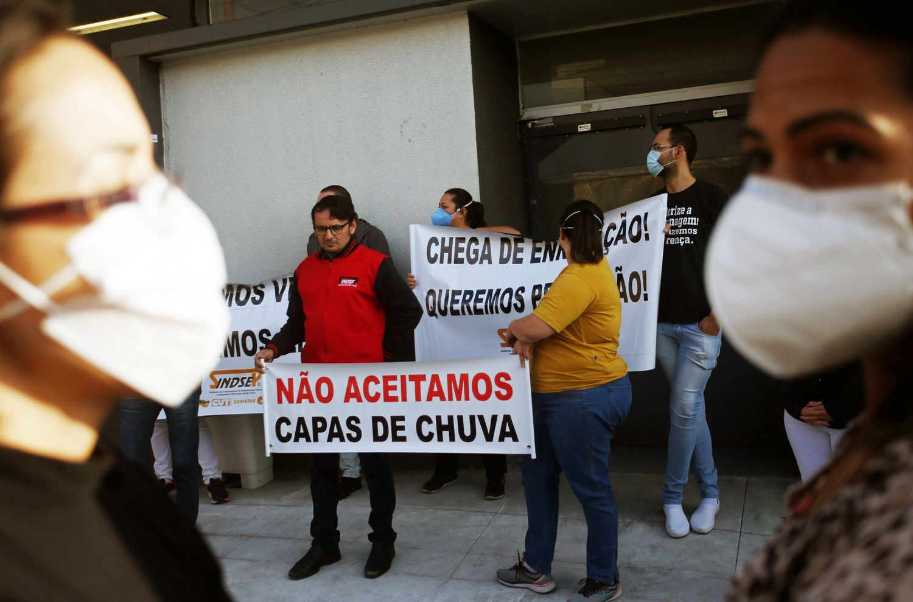

AO VIVO | Últimas notícias sobre o coronavírus no Brasil e no mundo
Mandetta diz que não aceita pedido de demissão de secretário Wanderson de Oliveira, coordenador da estratégia de combate ao coronavírus no Brasil. Brasil confirma 204 novas mortes e óbitos por Covid-19 chegam a 1.736 no país. As últimas notícias da crise da Covid-19, ao vivo
O ministro Luiz Henrique Mandetta disse nesta quarta-feira que não aceitou o pedido de demissão de Wanderson de Oliveira, secretário de Vigilância e Saúde da pasta e coordenador estratégico do enfrentamento à Covid-19 no Brasil. “Entramos no ministério juntos, estamos no ministério juntos e vamos sair juntos”, disse Mandetta. Wanderson de Oliveira, considerado o braço direito do ministro, enviou uma carta aos colegas na qual afirmava que “a gestão de Mandetta acabou”, segundo a Folha de S.Paulo, o que aumentou os rumores de que o próprio ministro deve deixar o cargo. Pesquisa do Atlas Político mostra que 76% são contra eventual saída de Mandetta da Saúde. Também nesta quarta, o Ministério da Saúde confirmou mais 204 mortes por coronavírus e, assim, o total de vítimas no país chega a 1.736. A pasta também contabilizou mais 3.058 pacientes com a doença, um aumento de 12% em relação ao dia anterior.
FonteÚltimas noticias: